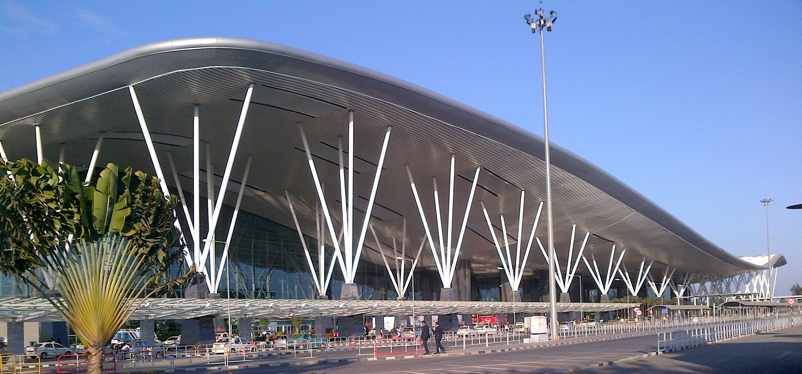

深圳国际机场某区域空调系统改造项目

- 项目位置
- 项目位于深圳市宝安区宝安国际机场，由1栋4层办公楼，1栋5层宿舍楼构成。总建筑面积34，989.68平方米。建筑总高度18.30米。本次需要改造的区域面积约320平方米，层高为4.5米。
- 项目情况
- （1）能源中心采用水蓄冷方式，24小时供应冷冻水。冷冻水设计参数为5℃/14.5℃。考虑管路输送能量损失以及换热器等因素影响，供应给办公楼及宿舍的冷冻水为7℃/15.5℃。
- （2）热交换间置于办公楼地下一层。在热交换间内设有排水沟和地漏，以排除冷冻水的排污、放空或意外泄漏水。选用一套自动补水真空喷射排气定压装置为冷冻水系统定压、补水、排气。
- （3）冷冻水管路采用异程和同程混合式布置，各分支设置静态平衡阀。
- （4）本次改造区域采用全空气空调系统，且为上送上回气流组织设计。
我公司提供的服务：空调系统改造技术咨询。